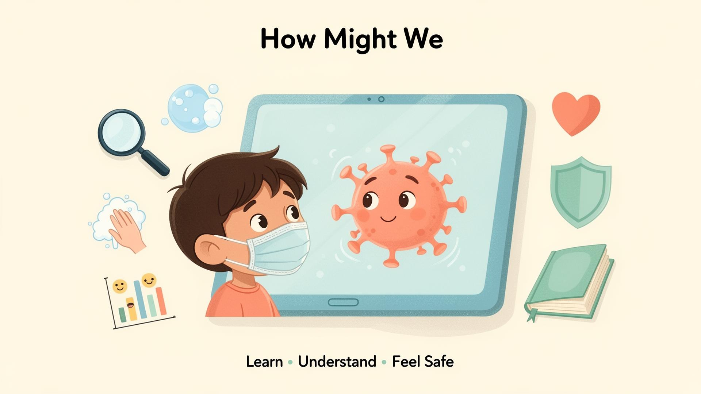
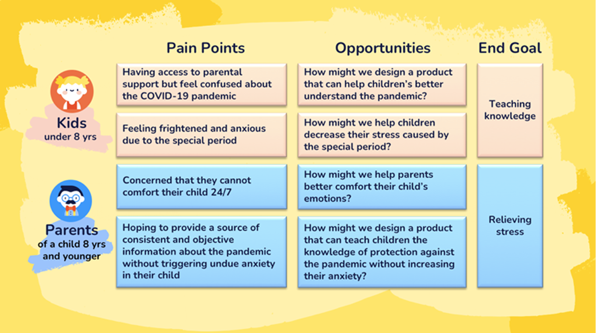
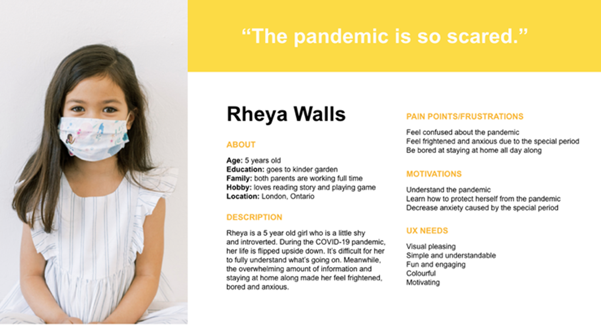
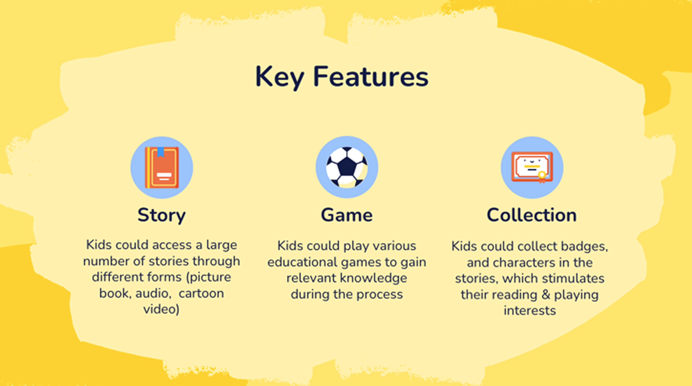
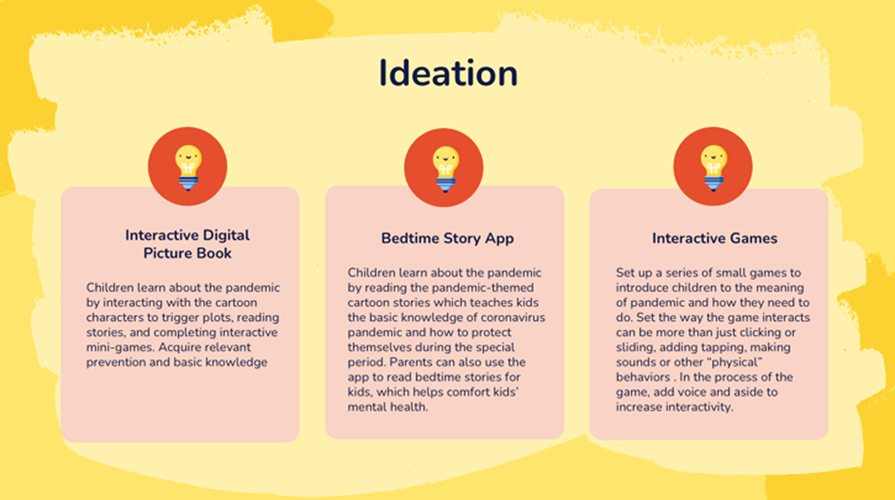
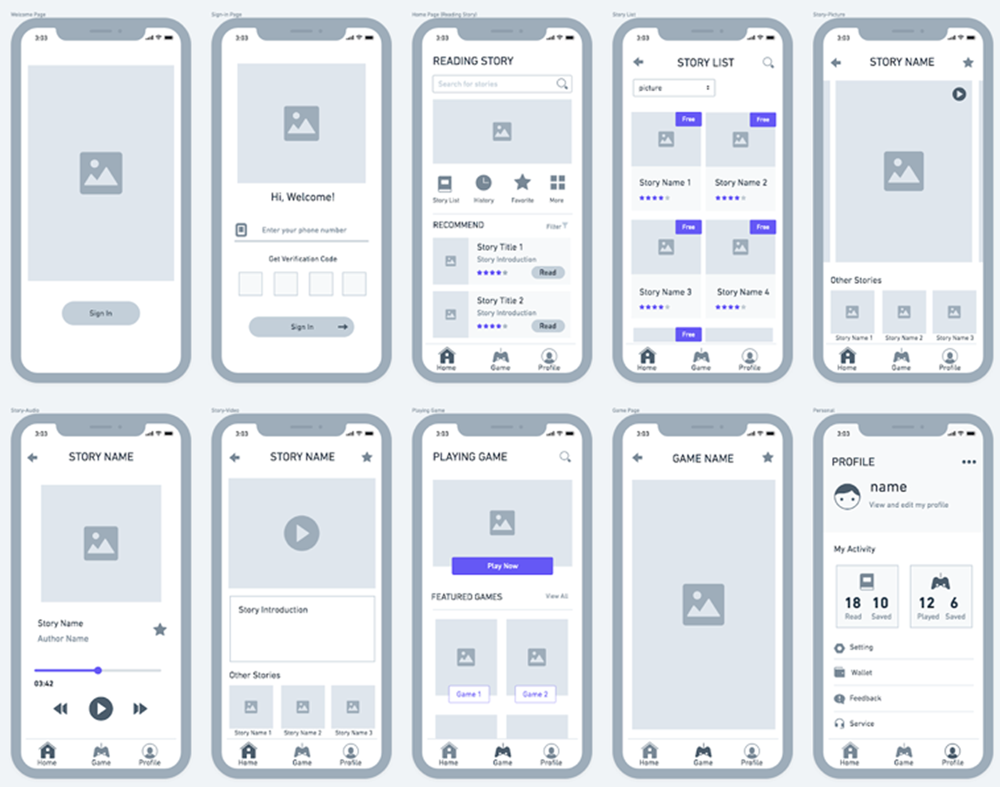
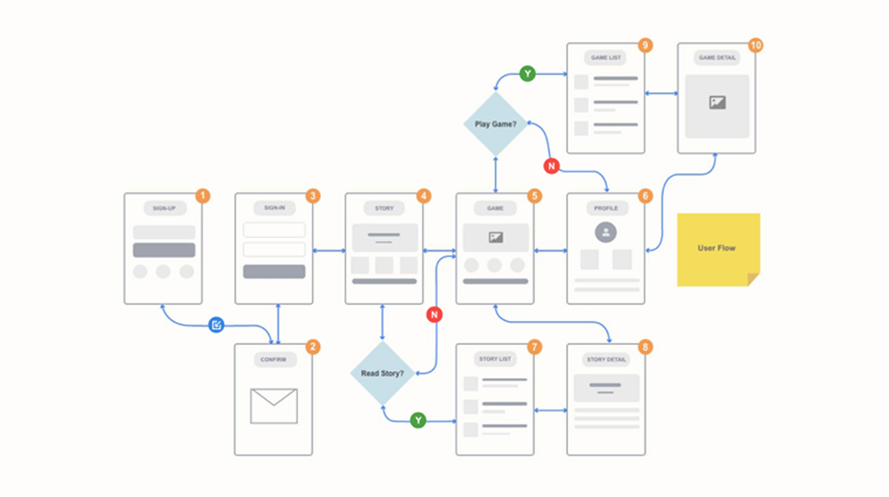
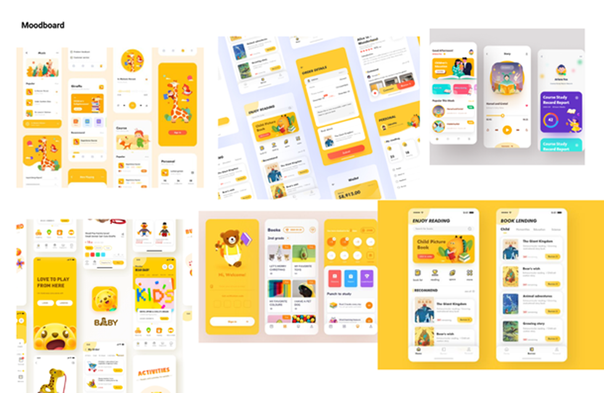
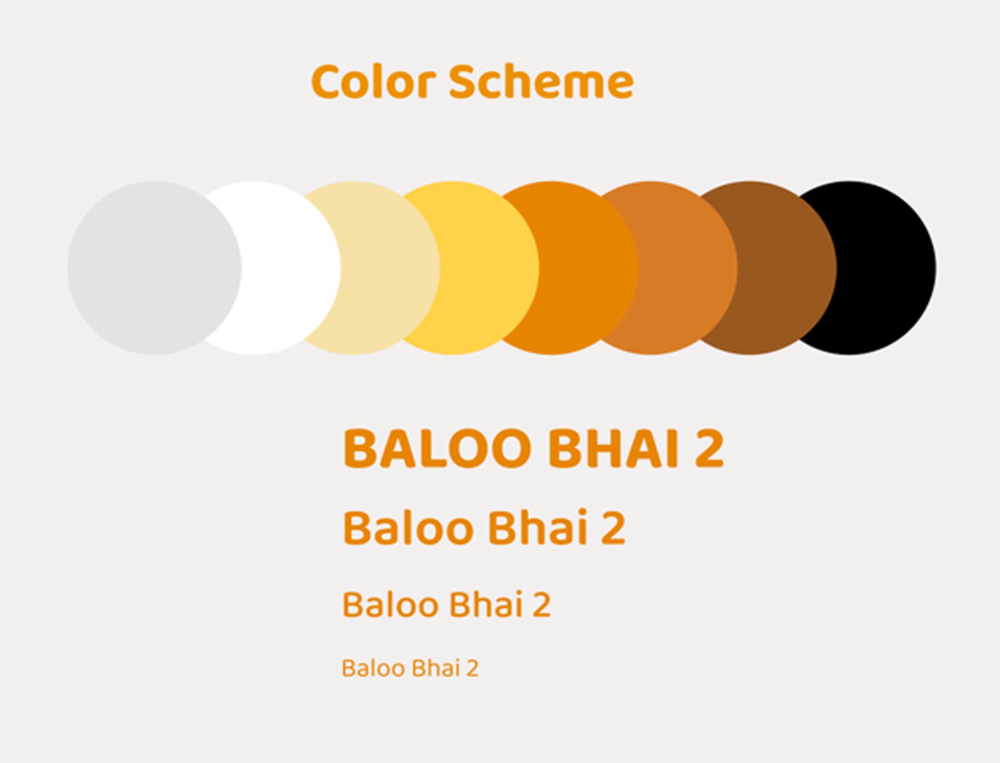

KidStory
An app designed for helping kids learn knowledge and release stress during COVID-19 pandemic through stories, games, and emotional support

01INTRODUCTION
Project Overview
KidStory is an educational app for kids of kindergarten age to explore stories and games to gain valuable knowledge about the pandemic and increase awareness of other topics, helping kids better understand the pandemic and arrange their free-time to decrease their stress caused by the special period.
The idea comes from the influence current COVID-19 pandemic is having on children. Medical research shows that keeping children healthy during stressful periods such as a pandemic requires more attention. During the global pandemic of COVID-19, young children’s worlds are flipped upside down. It may be difficult for them to fully understand the nature of the pandemic, which, in turn, triggers anxiety. Also, the overwhelming amount of information and numerous data sources may also increase their anxiety. Hence, our team decided to design and create an app which helps children better understand the knowledge of protection against Covid-19 pandemic, and help them to channel their emotions and promote healthy development.
02DESIGN CHALLENGE
How might we design a more innovative digital prototype to help children better understand the pandemic, thereby reducing their anxiety and stress?

03DESIGN DIRECTION
Solution
Our solution focuses on a way to design an educational mobile application which combining the functions of learning and entertaining for children. The application provides children with the channel to learn knowledge of protection against Covid-19 pandemic by reading stories and also decrease their stress caused by the special period through playing puzzle games.
04UNDERSTANDING AUDIENCE
Persona
The primary audience for our mobile application are children and parents of the children who are concerned to be influenced by the pandemic. Our approach to understanding the audience was to conduct user interviews to gain insights into the perspective of the parent.
We conducted 5 user interviews and consolidated our findings into a single persona below and a pain points & opportunities chart.


05IDEATION
Determining the Features
After summarizing our research and identifying the pain points / opportunities, we came up with the following three key features for the app:

Ideating the Application
As a group, we brainstormed a broad of ideas on each key feature to explore potential solutions to the design challenge and new angles outside of the box. Our strongest ideas could be concluded as the three concepts below.

06WIREFRAMING
Wireframe
With multiple feedback sessions and many more rounds of discussion, we combined the strongest ideas from each concept to generate a wireframe. It presents the information that will be displayed on each page, gives an outline of structure and layout of each page, and conveys the overall direction and description of the user interface.

07FLOW DESIGN
User Flow
In order to visualize the journey that my target user would take, I created a user flow within the app’s core features. The user flow lays out the user's movement through the mobile app, mapping out each and every step the user takes—from entry point right through to the final interaction.

08VISUAL EXPLORATION
Visual Design
While building our product concepts we also started with creating a moodboard and building our brand including color palette, typography for our product.

We wanted something that would be approachable to children. To fit those requirements, we decided on using a lighter tone of yellow as our primary brand color and the usage of Baloo Bhai 2 as the typography of choice.

09TESTING
Prototyping and Testing

After producing a prototype, we conducted a prototype evaluation to collect user feedback to product refinement. We tested a click-through prototype with three participants. The goal of the testing sessions was evaluative rather than generative. Sessions were focused on assessing task completion, with follow-up questions around the overall user experience, the difficulty of the tasks and any thoughts around moments of confusion or mismatched expectations.


10OUTCOME
Final Output
The final application enables children to access a large number of stories through three different forms—picture book, audio and cartoon video to gain relevant knowledge about the pandemic. Children can also play various games to relax and relieve stress caused by the special period and meanwhile learn some basic knowledge of protecting themselves from the pandemic.
Additionally, children can also have personalized settings to motivate to explore interested areas, which is also convenient for parents to track children’s activity of using the app.
11CLOSING
Reflection
I am blessed and so grateful to be part of this school project. Being able to contribute my ideas to such an important and impactful project helped me grow both as a designer who is more aware of user needs, user experience and design specification. Given that our group only had 4 weeks to complete the whole project, our timeline got very tight. If we had more available time, we would have loved to user test our final iterations one more time to fully validate our product, both from the physical piece to the mobile application.
This project also provided me a good experience of UI/UX design collaboration. Coming from all different backgrounds of expertise and skill, we were able to leverage each other’s strengths. I learned that working with others who specialize in different areas is truly a blessing. As a team we were able to collaborate in a way that allowed us to elevate KidStory much further than we had anticipated. The main takeaway of this project is definitely the power of working in a team setting where everyone has the same goal.
12IMPACT
Future Development⚡
Moving forward with KidStory, we would want to collect more detailed user stories that linked to comprehensive UX flows in order to enable us to validate the use of the application over time as more stories and games were added and the user completed more activities.
A self-assessment could be a possible future enhancement that would allow the user to indicate how they were feeling and in turn provide this information back to the parent via their side of the application.